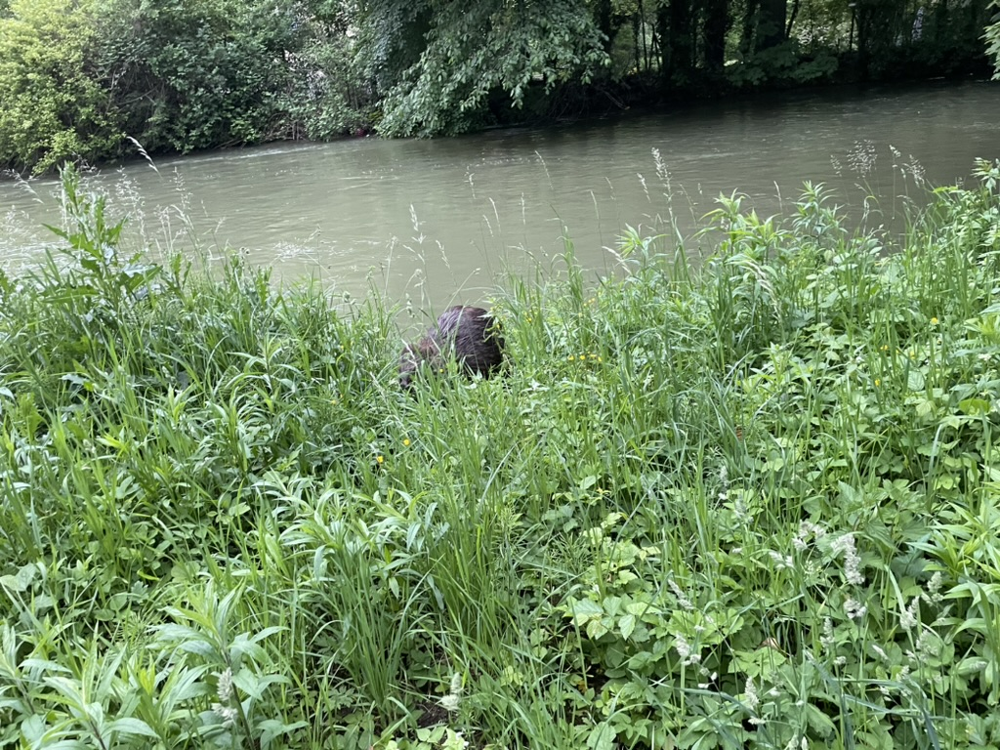

Chapter 10: The Smacking of the Muskrat

You awake again in a strange location. It's very dark, and damp. You see a light. You move
towards the light.
You exit the cave and are blinded by the light. You hear soft skin pattering about. It's a muskrat.
"Hello Pilgrim! Glad to meet you!"
"My name is Fred. I am a muskrat. I am not sure if you are familiar.
We're fairly simple creatures."
"Yes, I know about muskrats. I did not know that they spoke English, however."
"I've been made aware of you. You're the pilgrim that defeated the buttercups correct?"
"Hello, Fred. Yes, I am a pilgrim on the gradient. I appreciate your compliments, but
I do not engage in petty gossip like women. I am a man attempting to scale the peaks. I
have neither the time nor the energy to engage in meaningless talk, let alone with a talking muskrat. Which direction shall I
travel?"
"Ah, yes. Men have strange ways about them. I met a young man recently who revealed all sorts of
negative information about some of the other pilgrims that pass through here, including you. I must say, he was
not very nice..."
"Yes, yes, I do not give a shit. Which direction shall I travel, Muskrat."
"You must take the path to the right, down the hill,
and pass the honeycomb of deception."
"I appreciate your help. I will be on my way now. Thank you, Fred."
"You are very welcome."
And you're off. Something about that muskrat seemed strange to you. Besides the fact that he spoke English.
There was something off about the way he looked at
you. Something green in his eyes.
You take the path to the right. You descend the hill, and come upon The Honeycomb.
There are bees swirling around the honeycomb. They seem to hear you coming.
The bees swirl around you. You see Fred by the honeycomb. whispering something to the queen. The bees attack.
They buzz. "Protect the honey! He wants to steal our honey!" Your throat starts to close off.
"FATALITY"
You awake once again, in the cave. You move towards the light.
"Hello Pilgrim! Glad to meet you!"
It's the muskrat again.
"My name is Fred. I am a muskrat. I am not sure if you are familiar.
We're fairly simple creatures."
"Thank you Fred. Once again, I am not interested in your petty gossip. I am a man assuming the gradient and will be off shortly.
I appreciate your hospitality."
"Kindly."
You take the path, descend the hill, and attempt to pass the honeycomb. Once again, though you've tried to move a little faster this
time, you see the fat muskrat, out of breath whispering to the queen. The bees attack.
"FATALITY"
You exit the cave once again.
"Hello Pilgrim! Glad to meet you!"
"FATALITY"
You awake in the cave. You hatch a plan.
You exit the cave.
"Hello Pilgrim! Glad to meet you!"
You smack the muskrat so hard he goes unconscious. You pick him up by the scruff of the neck and are surprised by
the weight.
You throw him back in the cave in the pit that you dug for him. He hits the pit and rolls and tumbles inside his loose skin.
"I was nice to you! How could you be so cruel to me? You resentful and envious man! Let me out of this hole! Let me out!"
You take the path, you descend the hill. You approach the honeycomb.
The bees buzz, but this time in a different tone.
"You look weary traveller. Have some honey for the remainder of the journey."
You open your mouth as the tiny bees shovel sweet honey onto your outstretched tongue. You continue on the path, nourished and sated by the sweet nectar.
Chapter 11: The Garden of Eden
Title Page